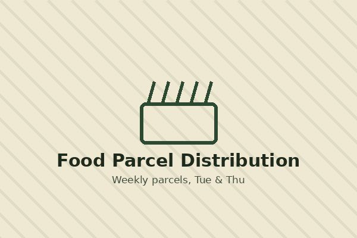
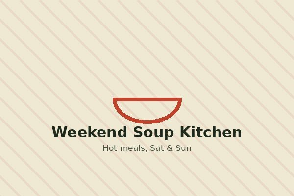
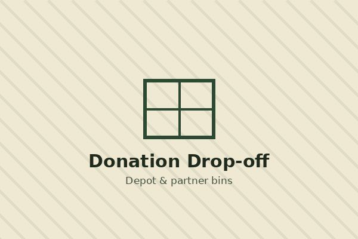

Weekly food parcel distribution

Pre-packed parcels of staples and seasonal produce, handed out every Tuesday and Thursday.

GreenLeaf Community Food Bank collects, sorts, and distributes food donations to low-income families in our local area. We run a weekly food parcel service, a weekend soup kitchen, and a drop-off service for businesses.
Volunteer with us | Partner your business | Request a food parcel
Updated by volunteers every Monday, so a donation always lands where it's needed most.
| Item | Status |
|---|---|
| Cooking oil (2L) | Critical |
| Baby formula | Critical |
| Rice, 2kg bags | Low |
| Canned vegetables | Low |
| Pasta | Stocked |

Pre-packed parcels of staples and seasonal produce, handed out every Tuesday and Thursday.

A hot, sit-down meal open to anyone who needs one, every Saturday and Sunday.

Drop food off at the depot or a partner bin, or arrange a recurring pickup.